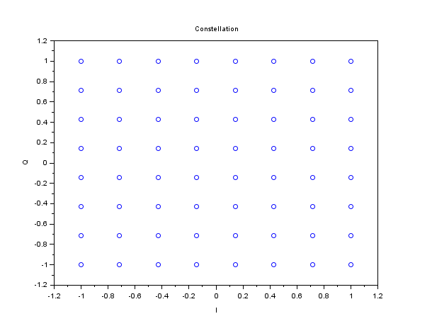

Description
A waveform object is the theorical description of a waveform. It can be used to configure a modulator or a demodulator, or to plot a constellation diagram. By default, the pulse shaping filter for the waveform is NRZ. This can be changed afterwards using the wf_set_filter function.
Support the following modulation types: phase modulations (BPSK, QPSK, M-PSK), amplitude modulations (ASK / OOK), quadrature phase / amplitude modulations (QAM), frequency modulations (M-FSK, with or without gaussian filtering).
Example
wf = wf_init('qam64'); clf(); plot_const(wf); |  |  |

QAM64 constellation